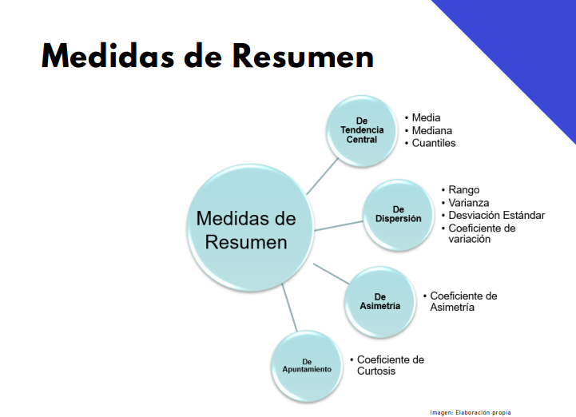
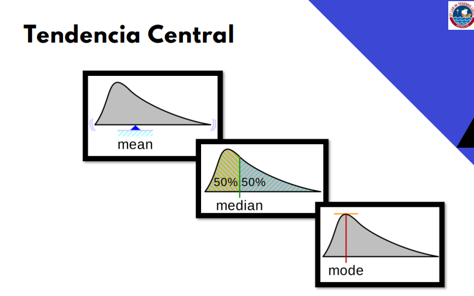
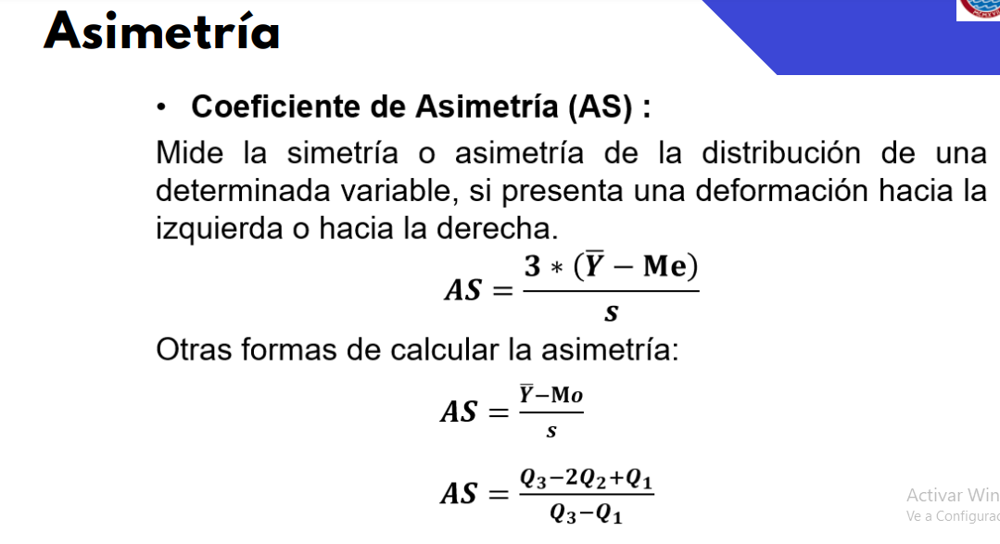
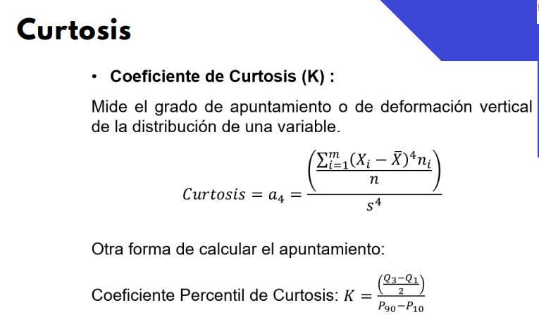
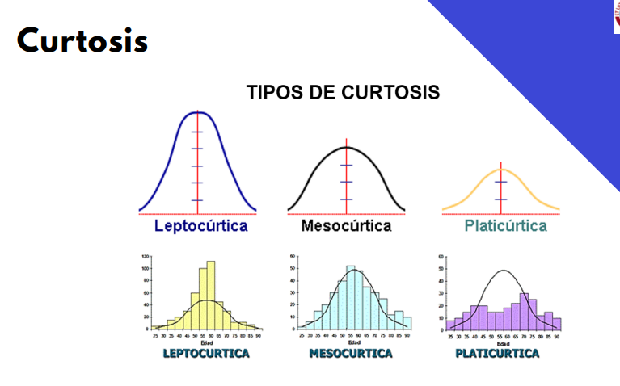

Semana 04/04
Tipos de datos según su origen
Tipo de variable
- Según naturaleza
- Cualitativa (categorías)
- Cuantitativa
- Discreta
- Continua
- Según escala de medida
- Nominal
- Cualitativa
- Ordinal
- Cualitativa
- De Intervalo
- Cuantitativa
- Solo existe un zero relativo, cuyo valor no significa ausencia. Simplemente es una referencia dentro de una escala de medida.
- Ejemplo: Temperatura
- De razón
- Cuantitativa
- Existe un cero absoluto que significa ausencia de la unidad.
Medidas de resumen
Tendencia central
La media trabaja con la magnitud de los elementos. Se le puede entender como un punto de equilibrio de una distribución.
La mediana trabaja con la posición de los elementos (ordenados). Esta divide a la variable en dos partes iguales.
Una variable ordinal podría no tener asociada una mediana, en caso que la cantidad de datos sea par, pues requeriría realizar un promedio entre ambas categorías centrales.
La moda no es muy útil para variables continuas, ya que la frecuencia de un único valor está no definida. Incluso para variables discretas la moda no es tan útil, comparado a la media o mediana.
Debe tenerse cuidado con transformar variables ordinales en numéricas, si es que se desea aprovechar en un cierto modelo, pero no es recomendable.
Moda, es el valor más frecuente de la variable. Pico más alto de la distribución.

- Cuantil
- Dividen al total de observaciones en m partes iguales.
- \(\text{ Cuantil}_i = \frac{i * n}{m}\)
- Cuartil
- Dividen al total de observaciones en 4 partes iguales.
- \(\text{ Q}_i = \frac{i * n}{4}\)
- Decil
- Dividen al total de observaciones en 10 partes iguales.
- \(\text{ D}_i = \frac{i * n}{10}\)
Variabilidad
- Rango: máximo - mínimo
- Rango Intercuartil:
- \(R = Q_3 - Q_1\)
- \(R\) pequeño implica poca dispersión.
- Es la medida de dispersión recomendada cuando la distribución presenta datos atípicos.
- Varianza muestral:
- \(S^2 (x) = \frac{\sum_{i=1}^{n}\left( x_i - \bar{x} \right)^2}{n-1}\)
- Es casi como un promedio de distancias.
- El término \(n-1\) es para que la varianza muetral tienda a la varianza poblacional (estimador insesgado).
- Desviación estándar muestral
- \(s(x) = \sqrt{ \frac{\displaystyle{\sum_{i=1}^{n}} \left( x_i - \bar{x} \right)^2}{n-1}}\)
- Coeficiente de variación
- \(CV(x) = \frac{s(x)}{\bar{x}}\)
- Carece de unidades. Está estandarizado, así que se puede emplear para comparar distribuciones con diferentes escalas de medida.
- Menor coeficiente de variación implica mayor homogeneidad.
- Este valor está sesgado cuando existen valores atípicos en la data. En ese caso, se debe hace un tratamiento especial para los datos atípicos; no basta con usar algo como \(IQR(x) \over median(x)\)
Cuando la distribución no presenta valores atípicos (o tiene muy pocos (percentage wise)), y es símetrica, se recomiendan como medidas de resumen la media, varianza y desviación estándar.
Cuando la distribución presenta datos atípicos, y es asimétrica, se recomiendan como medidas de resumen la mediana y el rango intercuartil.
Asimetría
Trata sobre la deformación horizontal.
Coeficiente de asimetría (AS)
- Asimetría negativa: \(AS < 0\)
- Cola jalada hacia la izquierda.
- Simétrica: \(AS = 0\)
- Asimetría positiva: \(AS > 0\)
- Cola jalada hacia la derecha.
- Asimetría negativa: \(AS < 0\)

Curtosis
Trata sobre deformación vertical.
No hay límite establecido, solo referencias, para saber qué tipo de curtosis está presente.
Mayor coeficiente de curtosis implica mayor deformación vertical.


La curtosis mesocúrtica hace referencia a cuando la distribución se asemeja a la normal.
En general, cuando vamos a presentar estadísticas, estas deben estar acompañadas de su gráfico respectivo.
Distribución marginal
- El estudio de una variable, no analizándola por casos/categorías.
Distribución condicional
Análisis de una variable en función de otras, tratadas como casos/categorías.
Si una variable \(X\) presenta una misma distribución marginal que sus distribuciones condicionales, respecto a una colección \(Y\) de categorías, entonces se concluye que estas variables (\(X\) e \(Y\)) no están relacionadas.
Hands-on: step2_entendimiento_de_datos.ipynb
Uno de los primeros pasos tras cargar la data es verificar que cada columna tenga el tipo de dato que le corresponde. Por ejemplo, variables cuantitativas como float, int, etc.
También hay que omitir duplicados en el dataset.
Al omitir los datos vacíos, no calcular solo cuántos datos vacíos hay, sino también el porcentaje que representan por columna/variable.
Comparando media y mediana de una misma lista de datos, podemos deducir información sobre la presencia de valores atípicos.
Hasta entendimiento de datos entrará en el laboratorio 1 de mañana, el cual será individual. Pero, como alumno libre, no tendré nota calificada.
El grupo del proyecto final solo puede ser de 4 personas, máximo.